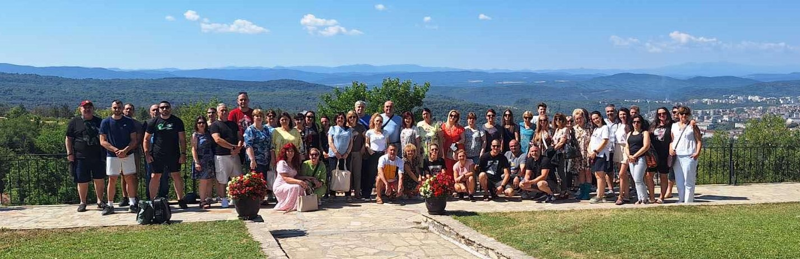

УЧИЛИЩЕН ЕКИП
РЪКОВОДСТВО
инж. Роза Арсова Желева - директор
Румяна Георгиева - ЗДУД
Надя Николова - ЗДУД
инж. Елена Томицина - ЗДУПД
Янка Стоянова - ЗДАСД
ПЕДАГОГИЧЕСКИ КОЛЕКТИВ
ПЕКК •Български език и литература•
Александър Марчев - магистър, IV ПКС
Янина Славова - магистър, IV ПКС
Петя Канева - магистър, IV ПКС
Десислава Кирова-Бъчварова - магистър, V ПКС
Анна Пехливанова - магистър
Георги Генчев - магистър
ПЕКК •Математика и Инф.технологии•
Румяна Георгиева - магистър, IV ПКС
Даниела Д. Живкова - магистър, IV ПКС
Надежда Йорданова - магистър, II ПКС
Монка Димитрова - магистър, IV ПКС
Галина Стойкова - магистър, IV ПКС
инж. Иванка Янкова - магистър, IV ПКС
инж. Живка Бостанджиева - магистър, IV ПКС
Емилия Дикова - бакалавър
ПЕКК •Немски език•
Надя П. Николова - магистър, IV ПКС
Надя Г. Николова - магистър, IV ПКС
Радостина Славова - магистър, II ПКС
Златина Панайотова - бакалавър, IV ПКС
Галина Петрова - магистър, IV ПКС
Надя Димитрова - магистър
ПЕКК •Английски език•
Милена Сталева-Георгиева - магистър, IV ПКС
Евелина Григорова - магистър, IV ПКС
Стефка Чавдарова - магистър, IV ПКС
Добрина Нейчева - бакалавър, IV ПКС
Станимира Танева-Шопова - магистър, IV ПКС
Розалия Петрова - бакалавър, IV ПКС
ПЕКК •Обществени науки•
Светозар Люцканов - магистър
Дарина Фильовска - магистър, V ПКС
Светлана Топалска - магистър
Николина Йорданова - магистър
ПЕКК •Природни науки•
Тодор Ангелов - магистър
инж. Атанас Атанасов - бакалавър
Димитрина Кръстева - магистър
Катя Николова - бакалавър, V ПКС
ПЕКК •Физическо възпитание и спорт•
Милена Иванова - магистър
Атанас Велев - магистър
Теодор Пейков - магистър
Кени Бозуков - магистър
ПЕКК •Машиностроене•
инж. Милена Даскалова - магистър, I ПКС
инж. Анна Каравасилева - магистър
инж. Мариян Русев - магистър
инж. Яни Самоковлиев - магистър
ПЕКК •Електроника•
инж. Анна Златанова - магистър, I ПКС
инж. Добрин Стоянов - магистър, IV ПКС
инж. Тодорка Стайкова - магистър, IV ПКС
инж. Никола Чанев - магистър
инж. Бояна Георгиева - магистър
инж. Драгомир Чолаков - магистър
инж. Радост Тенева - магистър
ПЕКК •Автотранспортна техника•
инж.Стефка Велкова - магистър, IV ПКС
Пламен Петров, V ПКС
инж.Станимир Велинов - магистър
инж.Драгомир Георгиев - магистър
инж.Димо Петков - магистър
инж.Иван Манов- магистър
Мартин Калдерон - магистър
ПЕКК •Електротехника•
инж. Албена Колева - магистър, I ПКС
инж. Румяна Момчилова - магистър, V ПКС
инж. Стоян Тодоров - магистър